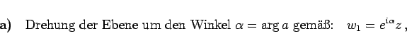
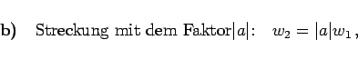
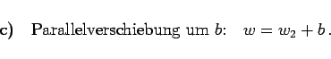
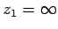
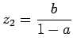
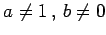

Inhalt Index DeskTop Bronstein

 Funktionentheorie Funktionen einer komplexen Veränderlichen Konforme Abbildung Einfachste konforme Abbildungen
Funktionentheorie Funktionen einer komplexen Veränderlichen Konforme Abbildung Einfachste konforme Abbildungen


Für die konforme Abbildung in der Form der linearen Funktion
| w =az +b | (14.11a) |
|  | (14.11b) |
|  | (14.11c) |
|  | (14.11d) |
Insgesamt geht dabei jede Figur in eine geometrisch ähnliche Figur über. Die Punkte  und  für  gehen in sich selbst über und heißen deshalb Fixpunkte. Die Abbildung zeigt das orthogonale Netz, das in das orthogonale kartesische Netz übergeht.